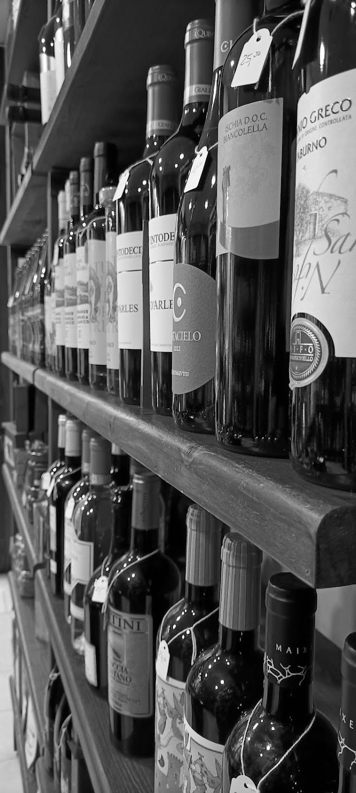
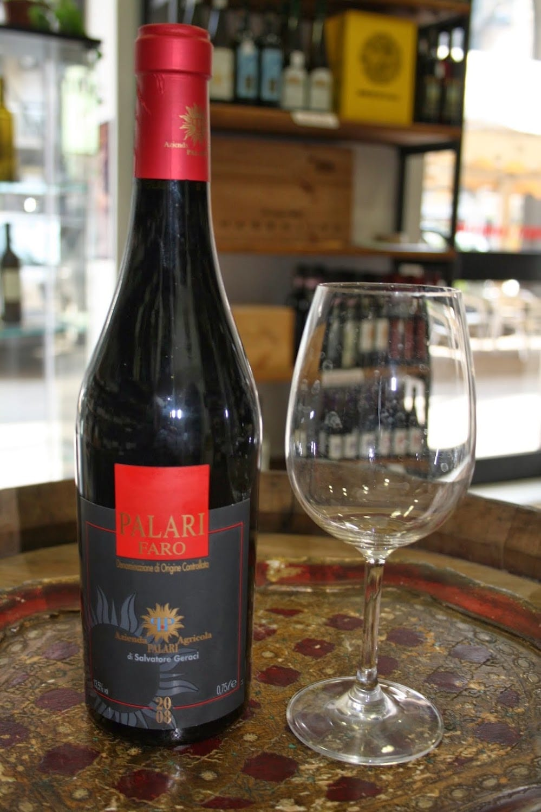
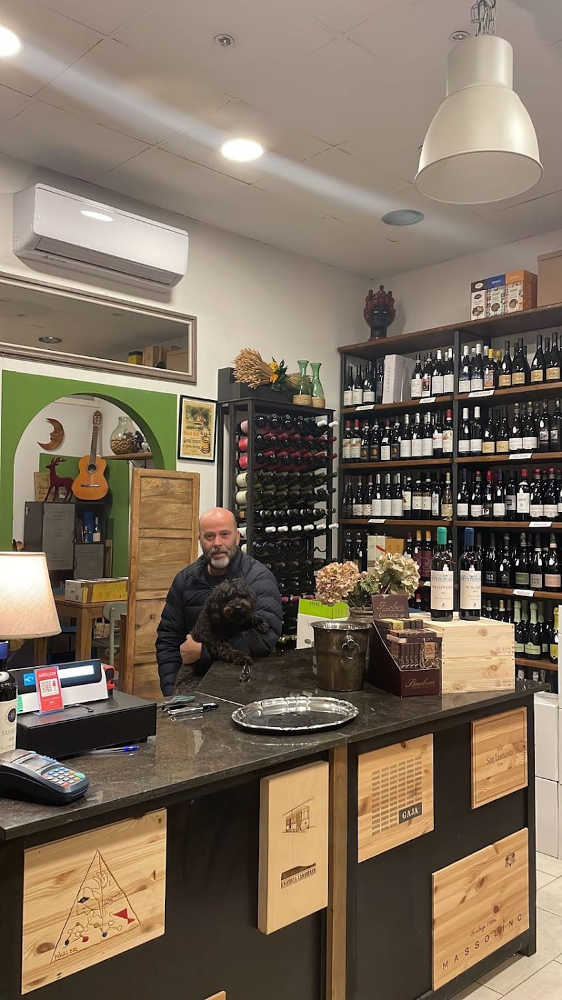
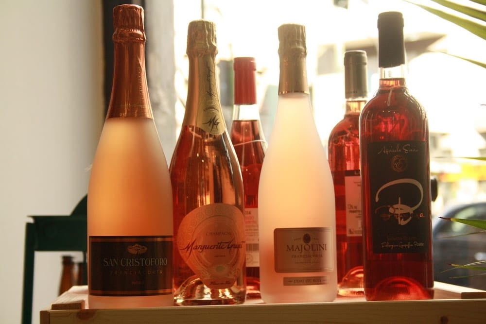
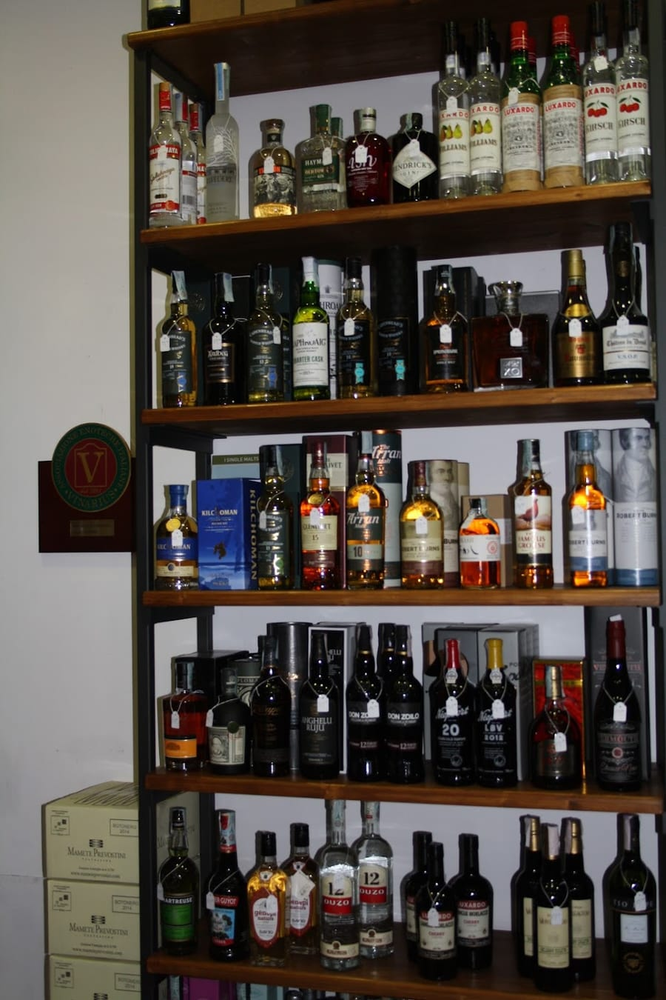
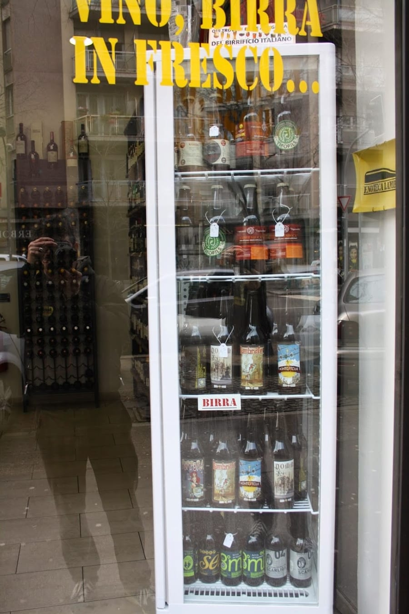
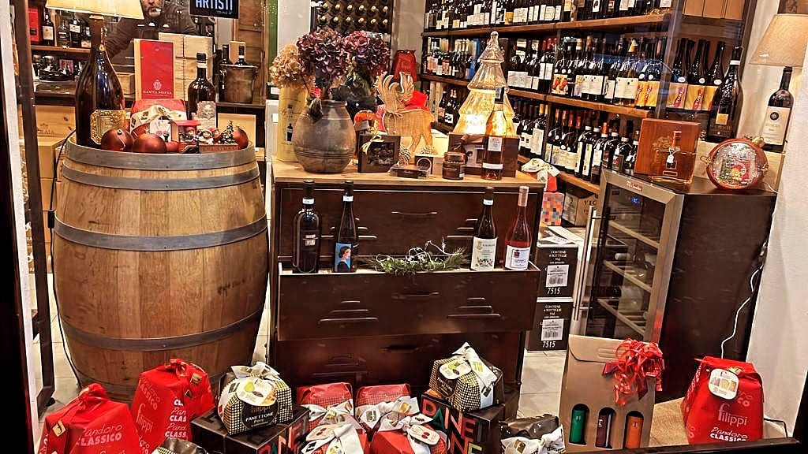
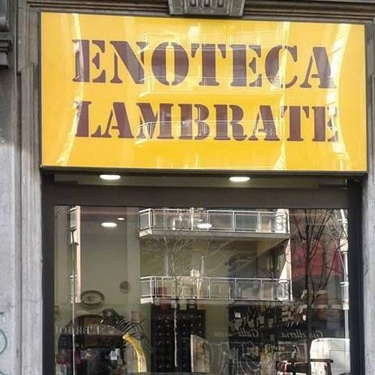

Vini
Rossi, bianchi e territori d'Italia: etichette scelte una a una, di ogni fascia di prezzo.
Enoteca · Vini · Distillati · Birre · Lambrate
Una piccola istituzione di quartiere in Via Porpora, angolo Via Teodosio. Vini selezionati di ogni fascia, bollicine, distillati e birre artigianali — con la competenza vera di Ciro, senza atteggiamenti.


Da Ciro
Dietro il banco c'è Ciro: preparatissimo, cortese, e con una competenza vera che si sente subito. Ti ascolta, capisce cosa cerchi e ti guida verso la bottiglia giusta — senza mai far pesare quanto vuoi spendere.
È questa la filosofia: una gamma di vini selezionati di ogni prezzo, consigliati con la stessa cura. Che sia un regalo, la cena di stasera o una scoperta per te.
Cosa trovi

Rossi, bianchi e territori d'Italia: etichette scelte una a una, di ogni fascia di prezzo.

Metodo classico, prosecchi e rosati freschi — pronti anche in fresco per stasera.

Grappe, whisky, rum, gin e amari: una selezione sorprendente per un locale così piccolo.

Un frigo sempre fornito di birre artigianali, per tutti i gusti. Vino, birra in fresco.
Cerchi un'idea regalo? Ciro prepara la confezione giusta, dalla bottiglia da tutti i giorni a quella importante.
La filosofia
Selezionati con la stessa cura, tutti ottimi. Dalla bottiglia da tavola a quella importante, ricevi lo stesso consiglio onesto.
Al banco
L'Enoteca Lambrate non è solo da asporto: ci si può fermare per un buon calice sul posto, magari con qualcosa da accompagnare e due chiacchiere. L'atmosfera è quella piacevole di una bottega che conosce i suoi clienti.

Le voci del quartiere
Piccola istituzione di quartiere. Ciro è preparatissimo e trasmette competenza vera, senza atteggiamenti.
Davide · ★★★★★
Enoteca dall'atmosfera piacevole: il proprietario Ciro è molto cortese, competente e pronto a consigliarti per il meglio. Sono entrata cercando un regalo, ma tornerò per me.
Alessandra Quaini · ★★★★★
Ciro è super competente e sempre gentile, ci consiglia sempre buoni vini con un ottimo rapporto qualità-prezzo. La nostra enoteca di fiducia.
Beatrice Schiavina · ★★★★★
Non fatevi ingannare dalle dimensioni: piccola enoteca, ma all'interno una vastità di vini, distillati e birre artigianali, per tutti i gusti e per tutti i portafogli.
Francesco Messano · ★★★★★
Da sommelier posso affermare di aver trovato un piccolo paradiso del vino, con etichette di gran gusto e un rapporto qualità-prezzo imbattibile a Milano.
Eugenio Miglietta · ★★★★★
Dove siamo

La mappa è di Google: aprendola, Google riceve il tuo indirizzo IP e può usare i suoi cookie.
FAQ
In Via Nicola Antonio Porpora 140, ingresso all'angolo con Via Teodosio, a Milano (zona Lambrate / Città Studi).
Da martedì a venerdì 10–20, sabato 10–13 e 15:30–20, lunedì 15:30–20. Domenica chiuso.
Vini selezionati di ogni fascia di prezzo, bollicine e rosé, distillati e birre artigianali. Perfetta per un regalo o per la bottiglia giusta di una cena.
Sì: è prevista la consumazione sul posto. Un buon calice e due chiacchiere, con il consiglio di Ciro.